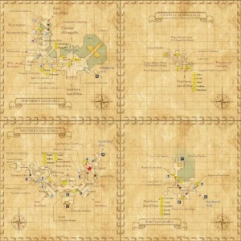

Level 75 reference · Zenith rules
|
 |

Walkthrough
- Talk to Amutiyaal (at the fountain near Lion Springs Tavern) who will give you a Red Sentinel Badge and ask you to find new recruits for a mercenary group in Aht Urhgan.
- Check the badge to get coordinates for the people you should talk to in each area.
- You will know you've found the right person because you get an emote message: "[<name>]'s badge flashes brightly."
- After you talk to all of the people for San d'Oria, return to Amutiyaal to receive a Red Invitation Card (key item).
- Note that Rank 2 for San D'Orians or advancement to Mission 2-3 for Windurstians and Bastokers is required to enter the Chateau d'Oraguille. 5 of the NPCs for Lure of the Wildcat quest are there, and thus access to it is required to get the Mythril piece as a reward.
- You will need to talk to:
- Southern San d'Oria (East to West)
- (K-5) Daggao (Lion Springs Tavern)
- (J-9) Authere (a small boy under a tree to the east of the Auction House)
- (I-8) Rouva (under a tree in west Victory Square)
- (I-8) Femitte (Rouva's attache)
- (G-8) Deraquien (guarding entrance to Watchdog Alley... as usual)
- Northern San d'Oria (South to North)
- (I-9) Giaunne (west of the fountain)
- (J-8) Maloquedil (north east of the fountain, under a tree)
- (J-8) Anilla (north of the fountain)
- (H-8) Phairupegiont (in view of the Chateau, looking into the moat)
- (E-4) Bertenont (upstairs outside the Royal Armoury)
- Port San d'Oria (West to East)
- (G-7) Perdiouvilet (Rusty Anchor Pub)
- (H-8) Pomilla (outside the Rusty Anchor, watching Joulet fish)
- (H-8) Cherlodeau (just before the docks where two fisherman are having a contest)
- (H-10) Parcarin (on top of the Auction House)
- (J-8) Rugiette (Regine's Magicmart)
- Chateau d'Oraguille (East to West)
- (I-9) Curilla (Temple Knights' Quarters)
- (I-9) Halver (main room)
- (H-9) Rahal (Royal Knights' Quarters)
- (H-7) Perfaumand (guarding Prince Royal Trion I D'Oraguille's Room)
- (F-7) Chalvatot (Her Majesty's garden)
Once the quest is complete, you can warp to Aht Urhgan Whitegate by trading the quest starter 300 gil. Just doing this quest alone will not gain you access to Whitegate. You must do a quest in Jeuno and a quest in Tenshodo before this access will work.
Before you leave Whitegate for the 1st time, be sure to complete the second mission Aht Urhgan Mission 2: Immortal Sentries or you will have to take the ferry again...
Game Description
Client: Amutiyaal (Lion Square in Front of Fountain, Southern San d'Oria)
Summary:
- The mercenary company "Salaheem's Sentinels" has asked you to help recruit new members.
Adapted from Eden Wiki: Lure of the Wildcat (San d'Oria) · Contributors and history · CC BY-SA 4.0. Revision 44592. Layout, links and optional background text adapted for Zenith.